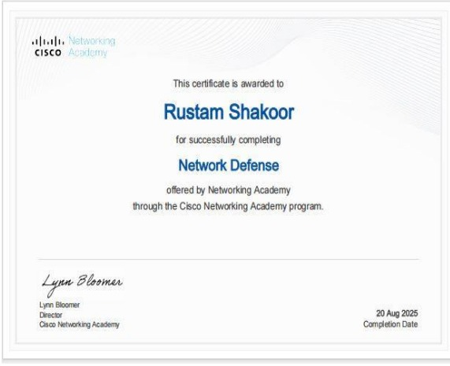
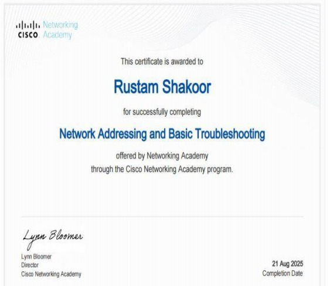
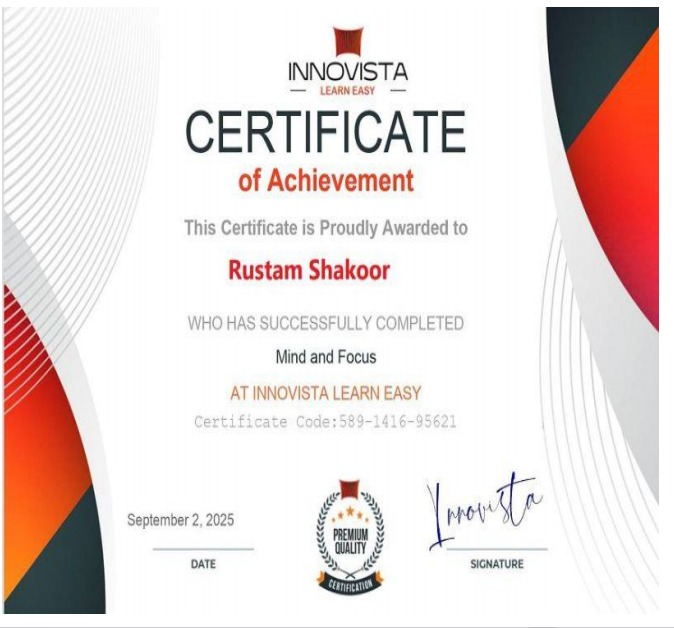
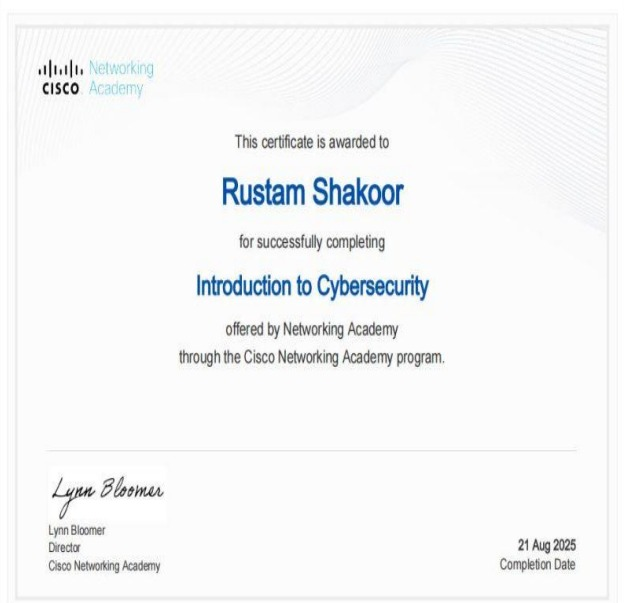
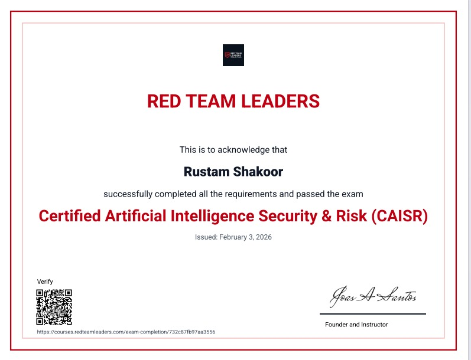
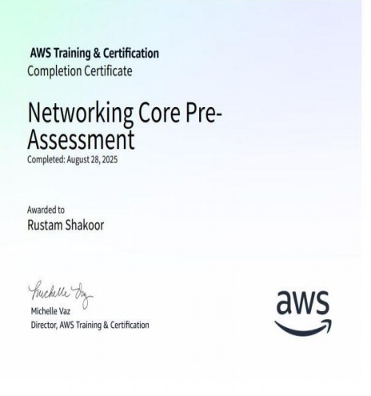
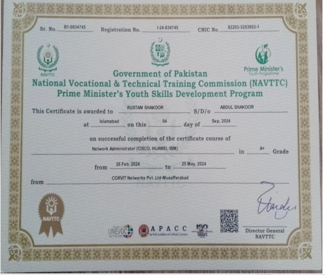
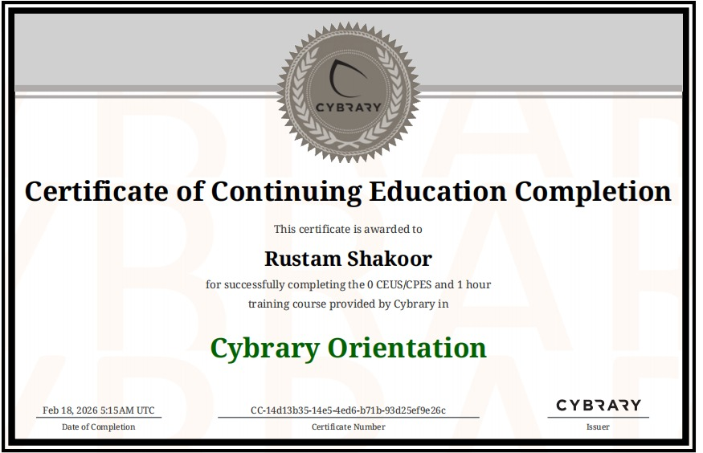

Certifications

Network Support and Security
Cisco Netacad

Security and Connectivity Support
Cisco Netacad

Certified Cybersecurity Educator Professional(CCEP)
RED Team Leaders
Prompt Engineering For Everyone
IBM Skills Network

Network Defense
Cisco Netacad

Network Addressing and Basic Troubleshooting
Cisco Netacad

Mind and Focus
AT INNOVISTA LEARN EASY

IT Basic
FEN INSTITUTE

Introduction to Cybersecurity
Cisco Netacad

Certified Artificial Intelligence Security and Risk(CAISR)
RED TEAM LEADERS

Networking Core Pre_Assessment
AWS

AWS Networking Basics
AWS

Network Administrator(CISCO,HUAWEI,IBM)
CORVIT network Pvt.Ltd.Muzaffrabad

Certificate of Continuing Education Completion
Cybrary Orientation